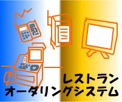
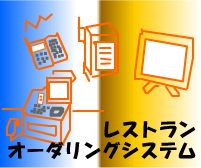
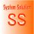

IPlanning
株式会社 アイプランニング
Towa Edogawabashi building 8F
Yamabuki-cho 347
Shinjuku-ku Tokyo
Phone: 03-5225-1147
開発実績
アイプランニングのシステムは、あなたの身近なところでも、こっそり活躍しています。
有名なところでは、以前、SONYさんと共同で犬型ロボット「アイボ」の企業向けのシステム開発などもしておりました。
専門色が強いシステムが多いことや、内部のシステムを担当している為、公にはなっていませんが アイプランニングの技術は各方面で活躍しております。
有名なところでは、以前、SONYさんと共同で犬型ロボット「アイボ」の企業向けのシステム開発などもしておりました。
専門色が強いシステムが多いことや、内部のシステムを担当している為、公にはなっていませんが アイプランニングの技術は各方面で活躍しております。
近年、ＩＴ技術は携帯端末や無線技術などを始めとしたユビキタス社会を迎えるにあたり、私たちの身の回りに続々と進出してきています。その流れに合わせるかのように、オープンシステムと呼ばれる、一般に仕様公開した技術での開発案件が当たり前になってきました。ＣＧＩ（Ｃｏｍｍｏｎ Ｇａｔｅｗａｙ Ｉｎｔｅｒｆａｃｅ）やＪ２ＥＥ（Ｊａｖａ ２ Ｅｎｔｅｒｐｒｉｓｅ Ｅｄｉｔｉｏｎ）などのＷｅｂ技術を中心としたインターネット利用は活発であります。それに伴い、アクセス可能なリソースをどのように活かすかといったＷｅｂサービス、技術的な高度さのみならずセキュリティという品質の面も重要な評価対象になりました。また、ＸＭＬ（ｅＸｔｅｎｓｉｂｌｅ Ｍａｒｋｕｐ Ｌａｎｇｕａｇｅ）といった、データをより汎用的に構造化可能な言語を用いたシステムも登場し、開発環境の更なる多様化に拍車を掛けています。その中でも、ＬｉｎｕｘというＯＳ（Ｏｐｅｒａｔｉｎｇ Ｓｙｓｔｅｍ）は、これまでの主な利用手段であったサーバーＯＳとしてのみでなく、組み込みＯＳやクライアントＯＳとしての地位を確立し始めており、今後更なる対応分野への展開が期待されています。
このように、めまぐるしく展開する時流の中、市場に出回るタイミングの重要性から、機能を限定しながらのリリースに耐え得る拡張性やカスタマイズに優れた柔軟性などを備えたソフトウェアが強く望まれており、それに対応可能な組織や人材が開発現場に求められているといえます。
アイプランニングでは、このような現実に早くから照準を合わせ、基本概念の研究を行うとともに、具体的な実践業務として力を注いできました。今後はさらに、このような傾向の業務が増加することが充分に予想されます。そして技術者は、その技術を利用する立場と提供する立場という、相反する相互の役割までをも熟知して創造することが要求されています。このように最先端の技術を研究することにより、将来の方向性をいち早く掴み、アイプランニングの本質である「企画と提案」という形で、社会に貢献する考え方が私たちの願う最大の理念です。
 アイプランニングでは、主にパソコン中心のソフトウェア開発を行っています。そして開発に至るプロセスには必ず設計があり、さらにその前段階には企画があります。そんな、数ある企画の中から誕生したプロジェクトの１つに大手メーカーと共同開発した「オーダエントリーシステム」があります。このシステムは企画、設計の段階からチーム全員でさまざまなアイデアを出し合い、試行錯誤を重ねて完成に至ったもので、漠然と存在していた機器であるハンディターミナルで「何ができるか、何に使えるか」から検討を行いました。当初はレストランにおけるメニューエントリーからスタートし、調理指示、売上の計算、統計情報の管理、従業員の出退勤管理、発注棚卸しに至る、現在ではトータル管理システムです。システム構成としては、全ての機器を制御・管理するオーダリングコントローラと、メニューエントリーを行うハンディターミナル、会計や統計処理を行うＰＯＳレジ、伝票を出力するプリンタ、厨房に据え置きでメニューエントリーを通知するキッチンディスプレイ、その他ウェートレスコールからなります。まず、ハンディタ−ミナルでオペレータのキー操作によってメニューのエントリーを行って、そのオーダを無線でコントローラに転送します。コントローラは厨房のキッチンディスプレイに調理品目の指示を与え、転送されたオーダを登録し、会計の情報をＰＯＳレジに転送し、かつ遠方の本部システムにも瞬時にオーダを転送するといったシステムです。
アイプランニングでは、主にパソコン中心のソフトウェア開発を行っています。そして開発に至るプロセスには必ず設計があり、さらにその前段階には企画があります。そんな、数ある企画の中から誕生したプロジェクトの１つに大手メーカーと共同開発した「オーダエントリーシステム」があります。このシステムは企画、設計の段階からチーム全員でさまざまなアイデアを出し合い、試行錯誤を重ねて完成に至ったもので、漠然と存在していた機器であるハンディターミナルで「何ができるか、何に使えるか」から検討を行いました。当初はレストランにおけるメニューエントリーからスタートし、調理指示、売上の計算、統計情報の管理、従業員の出退勤管理、発注棚卸しに至る、現在ではトータル管理システムです。システム構成としては、全ての機器を制御・管理するオーダリングコントローラと、メニューエントリーを行うハンディターミナル、会計や統計処理を行うＰＯＳレジ、伝票を出力するプリンタ、厨房に据え置きでメニューエントリーを通知するキッチンディスプレイ、その他ウェートレスコールからなります。まず、ハンディタ−ミナルでオペレータのキー操作によってメニューのエントリーを行って、そのオーダを無線でコントローラに転送します。コントローラは厨房のキッチンディスプレイに調理品目の指示を与え、転送されたオーダを登録し、会計の情報をＰＯＳレジに転送し、かつ遠方の本部システムにも瞬時にオーダを転送するといったシステムです。
さらにオーダエントリーだけでなく、メニューの作成や伝票レイアウト作成などの広い範囲にわたってレストラン業務の管理を行うプロジェクトになりました。このシステムはホテル向け、居酒屋向け、ゴルフ場向け、大規模小売店向け、スーパーマーケットの在庫管理などの各業界多方面にわたって利用されています。この他には、オーダエントリーシステムで積み上げてきた通信技術や圧縮技術を用いての携帯端末や電子辞書などの携帯機器アプリケーションを数多く開発してきました。特に携帯端末は個人の情報ツールだけにとどまらず、モバイルコミュニケーションとして、また、企業の競争力を大幅に高めるビジネスアクティビティ・システムとして、情報化社会・ペーパーレス社会の今日では、その企画・開発が各業界から注目されています。
不況下でも成長を続けるＩＴ業界。単にコンピュータ関連という枠を越えてまさに２１世紀の基幹産業になろうとしています。今、ＩＴ業界ではインターネット技術による「革命」が起きており産業構造そのものが大きく変化しようとしています。まず浮かぶのは情報システムを構成するハードウェア、アプリケーションソフトを開発するいわゆるコンピュータ関連企業です。しかし、それだけでＩＴ業界を語ることはできません。インターネット／イントラネット、エレクトロニック・コマースなどのキーワードに代表されるように、現代社会においてネットワークは欠かせないものとなっており、通信回線を提供する電信電話会社は当然のことインターネット・プロバイダなどの第二種電気通信事業者も密接な連携を築いています。そして私たちは、そこで流通するコンテンツを含め、周辺にある幅広い企業動向を視野に入れる必要があるのです。ＩＴ業界に対するユーザーの要求はクローズからオープン、ハードウェアからサポートやサービス、マージン型事業から付加価値事業へと大きくシフトしています。ＩＴはビジネスの効率化のための単なる道具ではなく、ＩＴこそがビジネスという意識を持つことが重要なのです。アイプランニングでは、独立系ソフトハウスとして培ってきた実績を生かしＩＴコンサルティングというアプローチで、企業のＩＴ戦略からシステム企画・設計・開発・運用までの一貫してサービスすることに強みを発揮しています。
具体的には情報戦略の立案、個別のシステム化提案、カスタマイズ、システム評価といった４つの活動が柱となっています。個別システム化提案などは、メインフレームによる一極集中からクライアント・サーバー型のネットワーク分散、さらにはサーバー統合へと急速に変化していくシステム開発に対応し、各種アプリケーションや関連技術をどういった形で適用すればよいかを、全体的な視点から捉えて提供・サポートを行っています。 従来の提案型ＳＥ業務は、ユーザーの情報システム部門の技術者が直接の仕事相手です。これに対してＩＴ業務は、企業の経営者をも相手にした提案であり、交渉こそが業務の中心です。技術の方法論であるアーキテクチャーとビジネスとしてのコンセプトを、いかに融合して提示することができるかが求められるのです。それは、未来型技術者に与えられた大きなテーマであり、私たちはそのテーマに向かって歩き始めています。
専門色の強い分野での圧倒的な開発実績
■ネットワーク系オープンシステム
 ・PHS対応レストラン・オーダエントリーネットワークシステム
・OLE国際標準POS通信プロトコル設計
・病院内イントラネット
・データ集配信転送制御システム
・携帯電話用基地局設置シミュレーション
・移動体通信監視制御操作卓システム
・POSネットワーク管理システム
・オーダエントリー・店舗‐本部通信管理制御システム
・MCAエミュレーション及びγ線分析システム
・石油備蓄コンビナート工事分析管理システム
・CAD図面管理システム
・文書配信PDMシステム
 ・PHS対応レストラン・オーダエントリーネットワークシステム
・OLE国際標準POS通信プロトコル設計
・病院内イントラネット
・データ集配信転送制御システム
・携帯電話用基地局設置シミュレーション
・移動体通信監視制御操作卓システム
・POSネットワーク管理システム
・オーダエントリー・店舗‐本部通信管理制御システム
・MCAエミュレーション及びγ線分析システム
・石油備蓄コンビナート工事分析管理システム
・CAD図面管理システム
・文書配信PDMシステム
■制御系アプリケーション
・レストラン・オーダエントリーシステム
・リンクスマネージメントオーダエントリーシステム
・世界人口時計
・辞書データ圧縮システム
・電子手帳
・電子辞書
・スクリーンパッド・オーダエントリーシステム
・携帯端末モバイルコミュニケーションシステム
・リバティ・ホテル支援向けシステム
・スーパーバイザー営業支援・携帯端末アプリケーション
・放射線用画像伝送装置ソフトウェア
・病理用カンファレンスソフトウェア
・放射線用Ｆユニットソフトウェア
・電子顕微鏡遠隔操作ソフトウェア
・ハイビジョン画像伝送システム
・レストラン・オーダエントリーシステム
・リンクスマネージメントオーダエントリーシステム
・世界人口時計
・辞書データ圧縮システム
・電子手帳
・電子辞書
・スクリーンパッド・オーダエントリーシステム
・携帯端末モバイルコミュニケーションシステム
・リバティ・ホテル支援向けシステム
・スーパーバイザー営業支援・携帯端末アプリケーション
・放射線用画像伝送装置ソフトウェア
・病理用カンファレンスソフトウェア
・放射線用Ｆユニットソフトウェア
・電子顕微鏡遠隔操作ソフトウェア
・ハイビジョン画像伝送システム
■CAD/CAM・CG等
・メガネフレーム意匠設計システム
・カメラ意匠設計システム
・ペイントシステム
・３次元ソリッドモデラー
・３図面ＣＡＤシステム
・３次元測定器ティーチングＣＡＤシステム
・マイクロフォトシステム
・ビジュアルシミュレーションシステム
・地図データ取込システム
・デジタルマッピングシステム
・投影レンズデータ管理システム
・ワイアフレームエディタシステム
・クラウンティーチングＣＡＤシステム
・電気系ＣＡＤのデータベース構築
・メガネフレーム意匠設計システム
・カメラ意匠設計システム
・ペイントシステム
・３次元ソリッドモデラー
・３図面ＣＡＤシステム
・３次元測定器ティーチングＣＡＤシステム
・マイクロフォトシステム
・ビジュアルシミュレーションシステム
・地図データ取込システム
・デジタルマッピングシステム
・投影レンズデータ管理システム
・ワイアフレームエディタシステム
・クラウンティーチングＣＡＤシステム
・電気系ＣＡＤのデータベース構築
■科学技術系数値計算ソフト等
・鏡筒内径リードカム評価技術
・分散オブジェクト科学開発
・レンズ透過率ムラ評価実験システム
・線幅異常値３ 成分抽出ソフトウェア
・露光機データ変換システム
・光学系公差解析システム
・複合偏心成分抽出ソフトウェア
・非球面測定ソフトウェア
・プリズム反射面精度判定ソフトウェア
・レーザー狭帯化素子評価ソフトウェア
・Ｉ-ＤＩＳＡデータ変換システム
・鏡筒内径リードカム評価技術
・分散オブジェクト科学開発
・レンズ透過率ムラ評価実験システム
・線幅異常値３ 成分抽出ソフトウェア
・露光機データ変換システム
・光学系公差解析システム
・複合偏心成分抽出ソフトウェア
・非球面測定ソフトウェア
・プリズム反射面精度判定ソフトウェア
・レーザー狭帯化素子評価ソフトウェア
・Ｉ-ＤＩＳＡデータ変換システム
自由な発想と堅実なプログラム開発
自由発想の企画発信基地として通信、医療、電子機器、光学機器などのより専門化した研究企画集団をめざしています。
IPL インフォメーション
2009/12/28
Google App Engine/Javaで簡易Blogを追加しました。
[詳細]
2009/12/28
Google App Engine/Javaデータストアの特徴を追加しました。
[詳細]
2009/12/28
Google App Engine/Javaの特徴・Eclipseプラグインを追加しました。
[詳細]
2009/07/14
Curl特集(2) ドキュメントビューアを作るを追加しました。
[詳細]
2009/06/11
Curl特集(1) CurlとRubyOnRails連携調査を追加しました。
[詳細]
2009/04/01
Flashプレゼン作成ツールDebugMode Winkを追加しました。
[詳細]
2009/01/06
開発効率を向上させるフリーソフトウェアを追加しました。
[詳細]
2008/10/16
AJAX+JavascriptDBで簡易CSVデータベース利用を追加しました。
[詳細]
開発ターゲットプラットフォーム
- PC
- ワークステーション
- 特殊機器(組み込みなど)
主な開発ターゲットOS
- Windows XP/2003
- Windows NT/2000
- Windows CE
- Linux
- Unix
- MS-DOS
主な開発ターゲットPG言語
- Visual C++/.NET
- Java
- C++
- Fortran
- High C
- PHP/Perl
主な開発ターゲットDB
- Oracle
- SQLServer
- DB2
- MySQL
ファミレスで活躍しているシステム
「デニーズ」「ファミール」や「天狗」等ファミリーレストランで
お店の方が注文を取っている機器を見たことはありませんか？この機器は
「ハンディーターミナル」と言います。そして、取った注文を厨房の印刷機に
飛ばし、そのオーダ品を調理します。
アイプランニングではこの様なレストランに取り込まれている システム(レストランオーダエントリーシステム)の中身を手掛けております。 是非ファミレスへお出かけの際は注目してみて下さいね。
アイプランニングではこの様なレストランに取り込まれている システム(レストランオーダエントリーシステム)の中身を手掛けております。 是非ファミレスへお出かけの際は注目してみて下さいね。
病院で活躍しているシステム
病院に掛かった時に電子カルテなどを見たことはありませんか？
アイプランニングでは、医療システムのお手伝いもさせて頂いてます。
少し前に医療関係のドラマが流行っていたかと思いますが、テレビの中に良く
見慣れた電子カルテを見たことを覚えてます。実際は電子カルテなどの
表に見える部分の他に先生から看護師への指示をシステム化していたりと
広範囲に渡ります。こんなところにもアイプランニングの技術が活躍してます。
歯科業界で活躍しているシステム
主に歯科技工士さんが作る歯の設計をするシステムのお手伝いをさせて頂いております。
人それぞれが、歯の形や並びが違います。これを患者さんへ合った歯を作る為に
歯科技工士さんはデジタル解析などを利用して、一人一人にマッチした歯を設計しています。
この時に使用される歯の設計のシステム(デンタルＣＡＤ／ＣＡＭ)のプログラム部分を
担当しています。
歯医者さんのあまり見えない部分で目に触れることはあまりないかもしれませんが、 このような場所でもアイプランニング技術が利用されています。
歯医者さんのあまり見えない部分で目に触れることはあまりないかもしれませんが、 このような場所でもアイプランニング技術が利用されています。
ソフトウエア開発ポリシー
- お客様にとって本当に必要なシステムの姿を見極める
- エンドユーザが使い易い、より良いインタフェースを常に模索し提案する
- 知識と開発力を併せ持った開発チームを形成し、システム開発に取り組む
- こまめに意見交換をし、問題点、疑問点を早期に解決する
- システム開発を軸として一人一人が社会貢献を意識する
- 仏の心をもちながら、作業する手は鬼の如く迅速に行う
- 自分自身で開発目標を見つけ、時間を有効に使う
最寄りは有楽町線江戸川橋駅
■地下鉄有楽町線
池袋 → ６分 → 江戸川橋駅
有楽町 → 12分 → 江戸川橋駅
江戸川橋駅下車 徒歩３分
池袋 → ６分 → 江戸川橋駅
有楽町 → 12分 → 江戸川橋駅
江戸川橋駅下車 徒歩３分
■地下鉄東西線
中野 → 11分 → 神楽坂駅
大手町 → 11分 → 神楽坂駅
神楽坂駅下車 徒歩１０分
中野 → 11分 → 神楽坂駅
大手町 → 11分 → 神楽坂駅
神楽坂駅下車 徒歩１０分
専門分野別３つの開発グループ
| ■エンジニアリングアプリケーションGroup Web・科学技術計算系・ロボット制御 | |
|  | ■システムソリューションGroup 制御・ネットワーク系オープンシステム |
| ■イノベーションテクノロジーGroup 科学技術計算系・医療システム |
おかげさまで創立２５周年
アイプラニングは、おかげさまで創立２５周年を迎えました。社会がバブル全盛の時も不況の時もアイプランニングを星の数ほどあるソフトハウスの中で御ひいきしていただいたお客様あってのこの２５年でした。
ありがとう御座います。これからも会社のシンボルとして掲げる「イノベーション」の名に恥じないシステム開発をお約束いたし、お客様の更なる発展をお手伝いさせていただきます。
ありがとう御座います。これからも会社のシンボルとして掲げる「イノベーション」の名に恥じないシステム開発をお約束いたし、お客様の更なる発展をお手伝いさせていただきます。